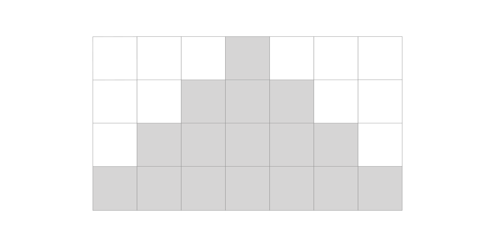
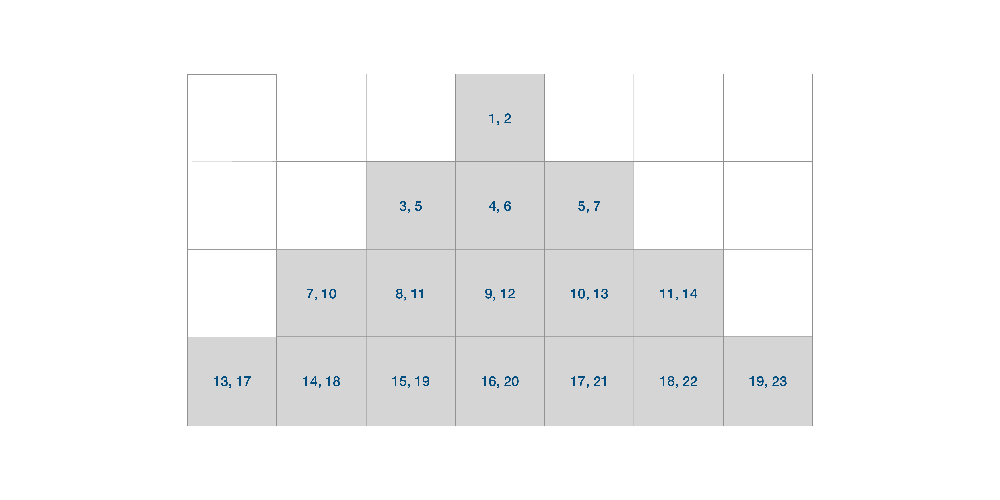
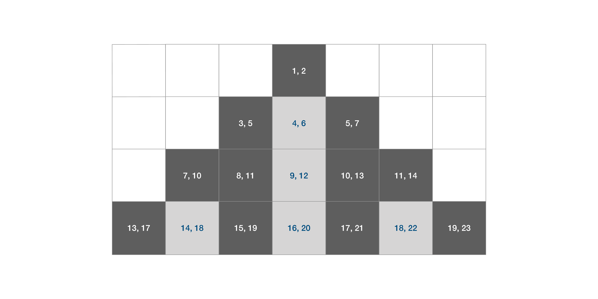

Exercise 2: Loops
Prerequisite
You have completed Exercise 1.
Learning Outcomes
Be comfortable writing simple C programs that involve loops.
Deadline
This is part of the CS1010 formative assessment. Submit before 18 September 2023, 23:59 to receive feedback and earn your achievement "badges".
Acceptance Link
The link to accept the exercise is not available publicly. Visit Canvas for the link.
Concepts and Difficulty
| Question | Loops | Efficiency | Difficulty | |
|---|---|---|---|---|
| 1 | Lemon | |||
| 2 | Factor | |||
| 3 | Parity | |||
| 4 | Nine | |||
| 5 | HDB | |||
| 6 | Binary^ | |||
| 7 | Onigiri^ | |||
| 8 | Fibonacci^ | |||
| 9 | Collatz | |||
| 10 | Rectangle | |||
| 11 | Prime | |||
| 12 | Pattern |
^: Questions 6 - 8 serve as in-class exercises during the lab session in Week 5.
Efficiency
For prime and pattern, while we do not require an advanced fast algorithm to check for primality testing, your code should not waste time by doing redundant work. You can use the time command to measure how long it takes to run a command. E.g.,
1 2 3 4 5 6 7 8 9 10 11 12 13 | |
If you code takes too long to run, it will timeout and fail the test case.
Question 1: Lemon
A \((l,m,n)\)-run (also known as a lemon run) is a sequence of \(m\) integers (\(m \ge 1\)) with a gap of \(n\) between one number and the next, starting with \(l\), i.e., \(\langle l, l+n, l+2n, ..., l+(m-1)n \rangle.\)
Write a program called lemon that reads in three integers \(l\), \(m\), and \(n\) from the standard input, and prints to the standard outputs, the numbers in the \((l, m, n)\)-run, one number per line.
Sample Runs
1 2 3 4 5 6 7 8 9 10 11 12 13 14 15 | |
Question 2: Factor
Given a number \(n\), we want to find out how many factors \(n\) has, excluding the trivial factor 1 and \(n\).
Write a program factor that reads, from the standard input, a positive integer \(n\), and prints, to the standard output, the number of factors of \(n\) between 2 and \(n-1\), inclusive.
Sample Runs
1 2 3 4 5 6 7 8 9 | |
Question 3: Parity
Write a program parity, that reads from standard input a positive integer \(n\) and prints to the standard output the following two lines,
1 2 | |
where X represents the number of odd digits in \(n\), and Y represents the number of even digits in \(n\).
Sample Runs
1 2 3 4 5 6 7 8 | |
Question Credit: Albert Sutiono (cohort 20/21)
Question 4: Nine
Write a program that looks for the least significant occurrence of digit 9 in a given number.
Your program, nine, should read a positive number from the standard input and print out the position of the least significant occurrence of 9. The rightmost digit has the position of 1, the second last has the position of 2, etc. If the number 9 does not appear in the given number, print 0.
Solve this problem in a function called find_least_significant_9 that takes in a long parameter (the input number) and returns a long (the position of 9). Your function should not search through more digits than necessary.
Sample Runs
1 2 3 4 5 6 7 8 9 | |
Question 5: HDB
ASCII Art refers to the art of drawing with only common letters, numbers, and symbols on our keyboard. My daughter has discovered that, if we draw rows of # symbols together, the output looks like an HDB flat!
Write a program hdb that takes in two positive integers \(w\) and \(h\), and draw \(h\) rows of # symbols, each row containing \(w\) #, with no spaces before, in between, and after.
Sample Runs
1 2 3 4 5 6 7 8 9 10 11 12 13 14 15 16 17 18 19 20 21 22 23 24 25 26 27 28 29 30 31 32 33 34 | |
Question 6: Binary
In this question, you are asked to convert a number represented in binary format (using digits 0 and 1) into decimal format (using digits 0 and 9).
A number in decimal format is represented with base 10. The last digit (rightmost) corresponds to the unit of 1, the next digit (second last) corresponds to the unit of 10, and so on. So, one can write the decimal number, for instance, 7146 as 7×1000 + 1×100 + 4×10 + 6×1.
A number represented in binary uses base 2 instead of base 10. The last digit corresponds to 1. The second last digit corresponds to 2, the third last digit corresponds to 4, and so on. So, the binary number 1101, for instance, corresponds to 1×8 + 1×4 + 1×1 = 13.
Write a program called binary that reads in a positive integer consisting of only 0s and 1s from the standard input, treats it as a binary number, and prints the corresponding decimal number to the standard output.
Try to solve this question with two different approaches: (i) recursively and (ii) iteratively with loops.
Sample Runs
1 2 3 4 5 6 7 8 9 | |
Question 7: Onigiri
Onigiri is a Japanese rice ball often formed in a triangular or cylindrical shape and wrapped in nori.
We are going to draw some triangular onigiri on our screen using #s.
Write a program onigiri.c that draws an isosceles triangle using (white space) and #. The program must read in a positive integer representing the height \(h\) of a triangle. The triangle must have exactly \(h\) rows. Each row must have exactly \(2h-1\) characters (including white spaces but excluding a new line). On each row, the sequence of "#" characters must be centralized, padded by white spaces on both sides.
Sample Run
1 2 3 4 5 6 7 8 9 10 11 12 13 14 15 | |
Hints
-
First, find the pattern to draw the triangle.
On row \(k\), how many
#s should you draw? How many white spaces should be padded on the left and the right? -
Write a function that draws a particular row of the triangle. Then, call this function repeatedly in a loop.
-
White spaces are not visible. To help you debug, you can pipe the output through a Unix tool called
sed.
1 2 3 4 5 6 | |
Question 8: Fibonacci
The Fibonacci sequence is a sequence of numbers 1, 1, 2, 3, 5, 8, 13, ... Fibonacci numbers often appear in mathematics as well as in nature and have many fascinating properties.
The Fibonacci sequence can be constructed as follows. The first Fibonacci number is 1. The second Fibonacci number is also 1. Subsequently, the \(i\)-th Fibonacci number is computed as the sum of the previous two Fibonacci numbers, the \((i-2)\)-th, and the \((i-1)\)-th.
Write a program called fibonacci that reads a positive integer number \(n\) from the standard input, and prints the \(n\)-th Fibonacci number to the standard output.
Try to solve this question with two different approaches: (i) recursively and (ii) iteratively with loops.
Note that when \(n\) is large, your recursive approach may take a long time to run, or even crash with the error Segmentation fault (core dumped). This is expected.
Sample Runs
1 2 3 4 5 6 7 8 9 | |
Question 9: Collatz
The Collatz Conjecture was introduced by the mathematician Lothar Collatz in 1937. Also known as the \(3n+1\) conjecture, the problem can be stated very simply but yet no one can prove that it is true or false. The conjecture states the following:
Consider the following operation on a positive integer \(n\): if \(n\) is even, divide it by two; otherwise, triple it and add one. Suppose we form a sequence of numbers by performing this operation repeatedly, beginning with any positive integer, then this process will eventually reach the number 1, for any initial positive integer \(n\).
For instance, if \(n\) = 10, then we have the sequence
10 -> 5 -> 16 -> 8 -> 4 -> 2 -> 1
The smallest number of steps taken by this process for \(n\) to reach 1 is called the total stopping time. In the example above, the total stopping time for 10 is 6.
Write a program collatz.c that reads in two positive integers \(m\) and \(n\) from the standard input (\(m \le n\)) and finds out, among the numbers between \(m\) to \(n\), inclusive, which one has the largest total stopping time. If two numbers have the same total stopping time, we break ties by choosing the larger number as the answer.
Your program should print to the standard output, the largest total stopping time, followed by the corresponding number, in two different lines.
Sample Runs
1 2 3 4 5 6 7 8 | |
Question 10: Rectangle
Write a program called rectangle that reads two positive integers from the standard input, corresponding to the width and the height of the rectangle. The width and height must be at least 2. Draw a rectangle on the screen using the special ASCII characters "╔" "╗" "╝" "╚" "═" "║", which corresponds to the top left, top right, bottom right, bottom left, top/bottom edge, and left/right edge of the rectangle respectively. Strings consisting of these special characters have been given to you in rectangle.c, and we have defined them as constants. For instance, "╔" is called TOP_LEFT, and to print this out, you can write
1 | |
Sample Runs
1 2 3 4 5 6 7 8 9 10 11 12 13 14 15 16 17 18 19 20 21 22 23 24 25 26 27 28 | |
Question 11: Prime
Write a program called prime that reads a positive integer \(n\) (\(n \ge 2\)) from the standard input and prints the largest prime smaller or equal to \(n\).
Recall that a prime number is a number that is only divisible by 1 and itself.
Your program must not make unnecessary checks or do repetitive work. In particular, once you find the evidence that a number is not a prime, there is no need to continue checking.
Your program must contain a boolean function is_prime that checks if a given number is prime. You should call this function in a loop to solve this problem.
prime should not take more than 5 seconds on CS1010 PE hosts to pass each of the provided test cases.
Sample Runs
1 2 3 4 5 6 7 8 9 | |
Question 12: Pattern
Even though the sequence of prime numbers appears to be random, mathematicians have found some intriguing patterns related to prime numbers. In this question, you are asked to write a program to draw a variation of the "Parallax Compression" pattern discovered by a software engineer, Shaun Gilchrist.
The pattern visualizes the distribution of prime numbers in a triangle, in the following way. The inputs given are an interval \(m\) (\(m \ge 1\)) and the height of the triangle \(h\).
The triangle has \(h\) rows. The first row of the triangle has one cell, the second row has three cells, the third row has five, etc. The cells are centrally aligned so that visually they form an equilateral triangle. We call the left-most cell of each row the leading cell.
Each cell in the triangle contains \(m\) integers. The first cell in the first row contains the numbers 1, 2, ..., \(m\). The leading cell of the next row, Row 2, contains \(m\) numbers between \(m + 1\) and \(3m\), with an increment of 2: i.e., \(m + 1\), \(m + 3\), \(m + 5\), .., \(m + (2m - 1)\). The leading cell of the next row, Row 3, contains the numbers \(3m + 1\) and \(6m\), with an increment of 3: i.e., \(3m + 1\), \(3m + 4\), \(3m + 7\),.. \(3m+(3m−2)\), etc.
Lemon Run
The leading cell of the rows corresponds to lemon runs for \((1, m, 1)\), \((m+1, m, 2)\), \((3m+1, m, 3)\), etc.
For instance, if \(m\) is 5, the leading cells of the first three rows contain the numbers
- {1, 2, 3, 4, 5},
- {6, 8, 10, 12, 14},
- {16, 19, 22, 25, 28},
respectively.
The rest of the cells in each row contains \(m\) numbers where each is one more than a number contained in the cell on its left. So, in Row 2, the numbers in the three cells are
- {6, 8, 10, 12, 14},
- {7, 9, 11, 13, 15}, and
- {8, 10, 12, 14, 16}.
In Row 3, the cells contain
- {16, 19, 22, 25, 28},
- {17, 20, 23, 26, 29},
- {18, 21, 24, 27, 30},
- {19, 22, 25, 28, 31}, and
- {20, 23, 26, 29, 32}.
Now, to visualize the distribution of primes, we do the following, for each cell of the triangle that contains at least one prime, we print # to the standard output at the corresponding position. Otherwise, we print ..
For example, in Row 3,
- Cell 1: {16, 19, 22, 25, 28}, we print
#since 19 is prime - Cell 2: {17, 20, 23, 26, 29}, we print
#since 23 is prime - Cell 3: {18, 21, 24, 27, 30}, we print
.since there is no prime - Cell 4: {19, 22, 25, 28, 31}, we print
#since 19 is prime - Cell 5: {20, 23, 26, 29, 32}, we print
#sine 23 is prime
So Row 3 will be printed as ##.## (leading and trailing white spaces are not shown).
Your output must contain exactly \(h\) rows, each row exactly \(2h−1\) characters (including the white spaces but excluding the newline). Note that in the sample runs below, the white spaces are not visible.
Example
1 2 3 4 5 6 | |
To understand the output, consider the cells below:

Now, consider the two numbers contained in each cell, in the four rows:
- Row 1: {1,2}
- Row 2: {3,5} {4,6} {5,7}
- Row 3: {7,10} {8,11} {9,12} {10,13} {11,14}
- Row 4: {13,17} {14,18} {15,19} {16,20} {17,21} {18,22} {19,23}

Now, we check whether the numbers contained in each cell have at least one prime, and replace them with either # or ..

Sample Runs
1 2 3 4 5 6 7 8 9 10 11 12 13 14 15 16 17 18 19 20 21 22 23 24 25 26 27 28 29 30 31 32 33 34 35 36 37 38 39 40 41 42 43 44 | |
Hints
As always, solve this problem by breaking it down into smaller problems.
In addition to drawing triangles and checking if a number is prime, you might find the following sub-problems useful:
-
Find the first number of each leading cell of each row, given the row number and the interval \(m\).
-
Given the row, the col, and the interval \(m\), does the cell contain a prime?
pattern should take less than a second to pass all the given test cases.